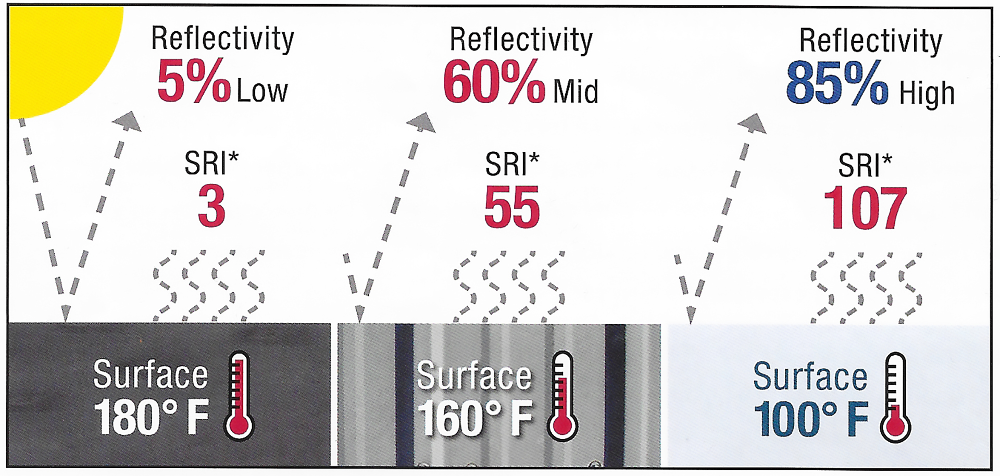
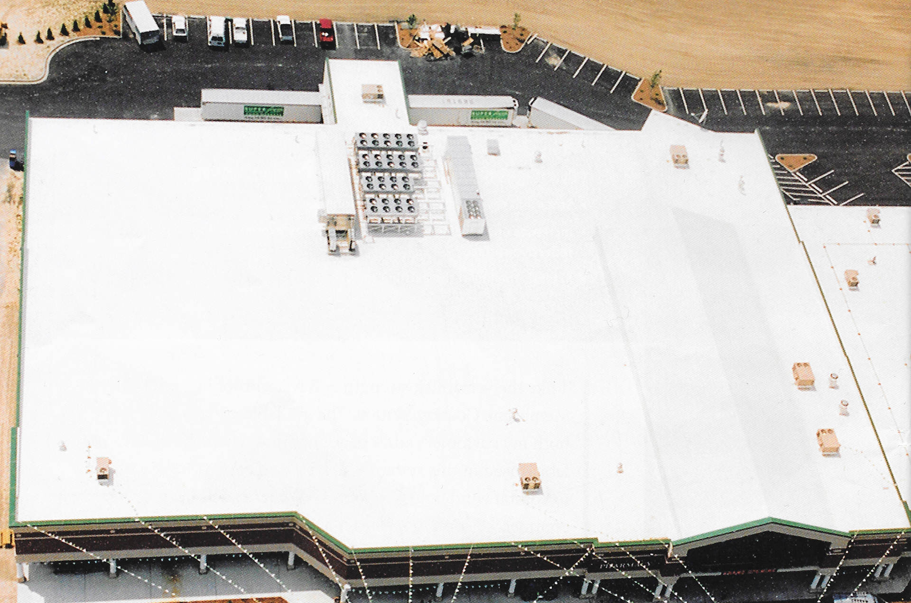
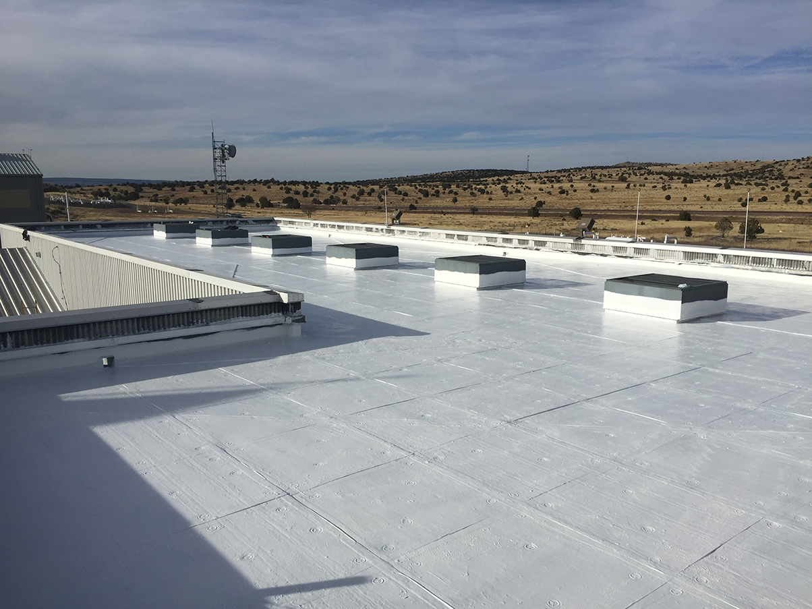
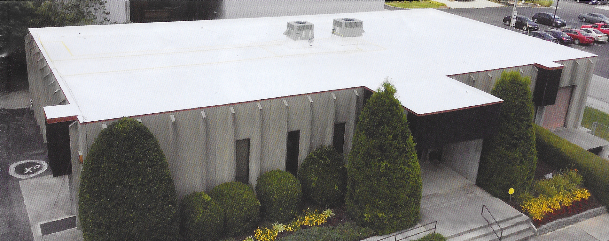

Highly reflective "cool" roofs are having their day in the sun. During the warmest weather, studies have indicated that they lower roof temperatures by up to 40% and decrease the amount of heat transferred into a building’s interior. That helps reduce energy needs for cooling, and using less energy not only saves money, it also reduces the amount of pollutants released into the atmosphere. Conklin Roofing Systems meet the very highest standards for energy efficiency.
520-278-7997
Does Your Roof Need Attention?
The Conklin Roofing System is the solution you’ve been looking for!
Save Money
It costs less to repair your roof than to replace it. When you don’t tear off your old roof there are no disposal costs, no building contents exposed to the elements, and no tenant displacement.
Save Energy
Save money on air conditioning. These energy-saving acrylic coating systems keep your building cooler, whether it’s air conditioned or not, by reflecting up to 85% of the sun’s UV rays.

Reviews

"While building our roofing business, we have specialized in solving hard-to-find leaks that building owners were unable to get resolved. By introducing Conklin's quality caulks and Wall-Kote coating to our product arsenal, we successfully waterproofed concrete, EFIS, and wall penetrations that otherwise would have been neglected. By utilizing Conklin’s specialty coatings line and providing exemplary workmanship and service, we have been able to build long term relationship with our customers."
~ Stan Volkman, Minnesota

"I like the versatility, strength and waterproofing capabilities of the Membrane Coating System. The available 10-year warranty gives both my customers and I peace of mind. The high-quality Spunflex fabric used in this system is flexible and easy to work with, due to coastal wind uplift and potential hurricanes, having a seamless commercial roofing system is a must here in south Florida!"~ Chirs Porosky, Florida

"We have found this system to be an excellent choice for both new construction and existing roof restoration projects. The positive features include full adherence to substrate, no air pockets to create condensation, full fabric immersion in base coat and painless repairs. This system is fully sustainable for many years, and is a leak-free solution our company and clients love."~ William Schrock, Montana